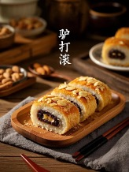

Un dessert traditionnel emblématique de Pékin

Le lüdagun est une spécialité traditionnelle très célèbre de Pékin. C’est un dessert d’origine mandchoue.
Son nom est assez amusant. Pendant la préparation, le rouleau de riz gluant est roulé dans de la poudre de soja grillée. Ce mouvement rappelle l’image d’un âne qui se roule par terre, d’où le nom « lüdagun », qui signifie littéralement « l’âne qui se roule ».
Ce dessert existe depuis longtemps et était autrefois très courant dans les foires, les marchés et les stands de rue à Pékin.
Première étape : préparer la pâte de riz gluant
On mélange d’abord de la farine de riz gluant avec de l’eau
pour obtenir une pâte.
Cette pâte est ensuite cuite à la vapeur pour former
une pâte de riz douce et élastique.
Ensuite, on l’aplatit pour former une fine couche.
Deuxième étape : ajouter la garniture
On étale une couche de pâte de haricots rouges sucrée
sur la pâte de riz,
puis on la roule délicatement pour former
un long rouleau.
Troisième étape : rouler dans la poudre de soja
Le rouleau est ensuite roulé dans
de la poudre de soja grillée
afin que toute la surface soit recouverte.
Enfin, on coupe le rouleau en petits morceaux : le lüdagun est prêt à être dégusté.
Comparé à d’autres desserts chinois, le lüdagun a une particularité : sa couche extérieure est composée de poudre de soja et non de sucre ou de sirop. Sa douceur est modérée et sa texture est très tendre et moelleuse.